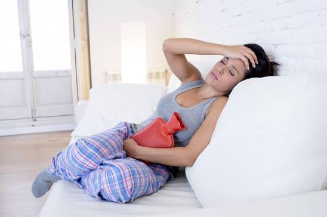
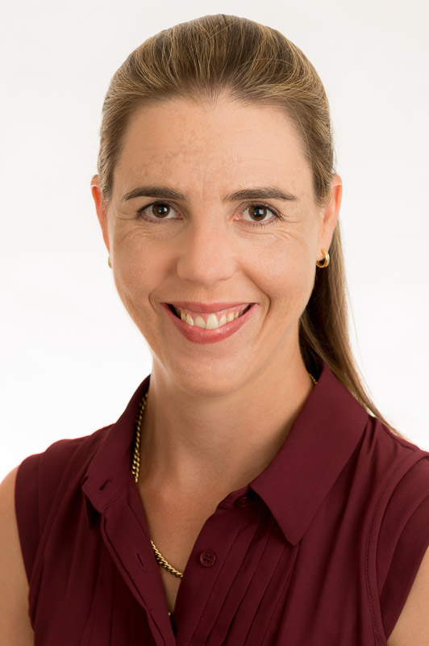

Pelvic pain
01 / The human story
The fear of finding nothing
When Evie Smith agreed to surgery after years of severe period pain, she was frightened the doctors would find nothing.
“You’re so scared that they’re going to go in and find nothing and all your answers will just be nothingness.”Evie Smith
Smith’s symptoms began with her first period at 12. She tried hormonal treatments through high school, but the pain continued. By 2025, she wanted to understand what was happening rather than keep trying to manage symptoms without an explanation.
In September 2025, surgery confirmed endometriosis and adenomyosis. The diagnosis helped her access treatment and a university student access plan, including extensions and separate exam arrangements.
“Being able to put a name to it and get accommodations around it is so good.”Evie Smith
Looking back, Smith said she had assumed other people experienced the same pain. Conversations with friends eventually made her question that belief. The experience raises a question beyond how long diagnosis takes: what happens while people try to make sense of symptoms without knowing their cause?
At the University of Queensland, researchers have developed a risk-prediction model designed to help identify people who may be more likely to develop endometriosis and warrant further investigation. The model is called SAFE. Whether it could make that uncertain period shorter — or change how it feels — remains to be established.
02 / The research
Could SAFE make the route to answers clearer?
The SAFE score is a risk-prediction model developed by University of Queensland researchers to help identify people who may be at higher risk of endometriosis and could benefit from further investigation.
Published in eClinicalMedicine in March 2026, the study analysed data from more than 9,000 women in the Australian Longitudinal Study on Women’s Health. Researchers identified six factors associated with a later endometriosis diagnosis. The model’s strongest prediction came from symptoms and experiences reported during adolescence, particularly between ages 16 and 19.
“Our goal with the SAFE score was to try and address that lag between the first experience of symptoms and then the actual diagnosis.”Dr Sally Mortlock · UQ research team
The factors include pelvic pain, seeking medical care for that pain, taking pain medication, heavy menstrual bleeding, painful periods and a family history of endometriosis. Together, they are intended to help flag when further assessment may be appropriate — not to confirm endometriosis on their own.
Mortlock said the published model has not yet become a routine GP-clinic tool. The team is seeking funding and consulting consumer and clinician groups to work out how the score should be presented, interpreted and used in practice.
“Maybe if GPs or even the girls themselves are aware of that, they would go and get it investigated and that can start this diagnostic pathway a lot sooner.”Dr Sally Mortlock
That is the promise of SAFE: a possible earlier prompt for investigation. It has not yet been shown to reduce diagnostic delays or psychological distress, and the researchers’ next task is to establish how it would work in everyday care.
Source: Mishra et al. (2026), “Development of an early prediction model for endometriosis risk: the simplified adolescent factors for endometriosis (SAFE) score”, eClinicalMedicine.
03 / The psychological impact
The symptoms are not only physical.
A 2026 Australian study examined whether pain, psychological distress and quality of life differed between people with diagnosed endometriosis and people who suspected they had it.
In a cross-sectional online survey, 550 participants reported a confirmed diagnosis and 103 suspected they had endometriosis. The suspected group reported significantly higher pelvic pain and anxiety symptoms. Participants were recruited through Australian endometriosis organisations, so the results should be understood in the context of that sample. The study offers evidence that the experience before diagnosis deserves attention, not proof that uncertainty alone causes distress or that a diagnosis will resolve it.
Source: Mosterd et al. (2026), “Comparing psychological distress, health-related quality of life and pain in individuals diagnosed with endometriosis and suspected to have endometriosis”, Journal of Psychosomatic Research.


Clinical perspective
“For some women, having a label is important. They want validation and to know there is a clear cause for their pain.”Dr Melinda Heywood · Brisbane gynaecologist
Heywood said patients who have repeatedly been told their pain is normal can arrive at a specialist feeling they must fight to have their symptoms investigated. She also cautioned that pelvic pain can have different causes and the amount of endometriosis does not necessarily correspond to the severity of pain.
What medical records can — and cannot — show.
A separate Australian study examined records for 19,786 women aged 14–49 who received a GP-documented endometriosis diagnosis between 2011 and 2021. It records symptoms documented in participating practices before diagnosis, not every symptom experienced or every person who suspects they have the condition.
What GPs recorded around diagnosis
Share of the 19,786 women in the Australian GP cohort, 2011–2021. Blue bars show symptoms documented before diagnosis; pink bars show depression and anxiety recorded as other conditions at diagnosis.
Symptoms before diagnosisOther recorded conditions
40.8%Pelvic
pain
pain
22.1%Painful
periods
periods
19.3%Fatigue
15.0%Heavy
bleeding
bleeding
12.5%Altered
bleeding
bleeding
11.5%Bowel
symptoms
symptoms
8.0%Infertility
5.7%Pain during
sex
sex
4.5%Painful
urination
urination
24.0%Depression*
22.5%Anxiety*
Source: Mazza et al., “The clinical presentation, investigation, and management of women diagnosed with endometriosis in Australian general practices, 2011–2021: an open cohort study”, Medical Journal of Australia (2025), Boxes 2–3. *Depression and anxiety are other conditions recorded in the cohort, not symptoms in the pre-diagnosis symptom list. The measures are shown together for context, but are not the same type of measure and do not demonstrate that diagnosis caused or prevented psychological distress. These percentages describe recorded data among the cohort with a GP-documented diagnosis, not prevalence among all Queensland women.
04 / A Queensland-sized picture
17%
of women by their early 40s
One in six. Seventeen in every hundred.
A Queensland Government statement reported that around one in six (17%) women in Queensland had been diagnosed with endometriosis by their early 40s.
Each dot represents one percentage point. The 17 highlighted dots visualise the reported proportion; they do not estimate the number of Queenslanders living with the condition.
This is a government-reported figure with an age qualifier, published in February 2024. It describes women diagnosed by their early 40s, not the proportion of all Queensland residents or everyone who may have endometriosis.
1 dot
1 percentage point
1 percentage point
05 / The diagnostic journey
Years can pass between symptoms and answers.
A diagnostic journey rarely follows a neat, predictable line. Select each stage to explore how it can feel — using the experiences of the people you interviewed.
One study’s reported delay“A name to the pain” reported an average diagnostic delay of 12.3 years among 506 Australian survey participants with self-reported endometriosis. This is the result for that sample, not a universal timeline or a Queensland-specific estimate.
12.3 years · reported average in the Australian study
Source: Mosterd et al. (2025), “A name to the pain”, a mixed-methods Australian survey of 506 people with self-reported endometriosis. The paper also reports that participants whose first GP presentation was in 2018 or later had a shorter mean delay of 4.7 years.
Not everyone decides to keep investigating.
Charlee Webb has not been diagnosed with endometriosis and said she was unsure it explained her symptoms. After experiencing irregular periods, heavy bleeding and cramps, she had spoken to a doctor but had not sought specialist investigation.
“While it’s manageable, it just seems like such a waste of time and energy and money and effort to get it done.”Charlee Webb · still seeking clarity
Her experience is not evidence that she has endometriosis. It shows how the cost, effort and uncertainty of further investigation can shape a person’s decisions while symptoms feel manageable.
Stage 01Select another point to explore the journey
First symptoms
Evie Smith said her symptoms began with her first period at 12. She assumed the pain was something everyone experienced because she had little basis for comparison.
“I just had it in my head like, ‘Well, everyone must just be experiencing this.’”
Evie Smith
06 / Inside SAFE
Six factors, not a self-diagnosis test.
The published model uses six factors associated with later endometriosis diagnosis. They are presented here to explain the research, not to invite readers to assess their own risk.
The researchers are still working with consumers and clinicians on how a practical clinic tool would look and how its results should be interpreted.
The six factors behind SAFE
Researchers identified these indicators in the published risk model. A combination of factors can help estimate risk, but no single factor proves that someone has endometriosis.
Seeking medical care for pelvic pain
Taking medication for pelvic pain
Heavy menstrual bleeding
Painful periods
Family history of endometriosis
SAFE is a research risk-prediction model, not a diagnostic test. Source: Mishra et al. (2026), the published SAFE score study.
07 / What diagnosis can change
Sometimes, a name changes the story.
For many people, diagnosis means more than a treatment plan. It can provide language for symptoms, validation after years of doubt, and a clearer way to explain needs to other people.
A 2025 Australian mixed-methods study, “A name to the pain”, found that 487 of 506 participants — 96.2 per cent — considered a diagnosis important. Participants described validation, relief and a greater ability to communicate their symptoms and needs.
Evie Smith said a diagnosis opened up treatment options and practical support at university.
“Once you have a name for it ... all your options just open up.”Evie Smith
Smith said she had assumed her period pain was normal when she was younger. After diagnosis, she could point to a recognised condition when explaining her symptoms to doctors and other people.
“Just because something is common doesn’t mean it’s normal.”Evie Smith
A diagnosis does not mean every symptom disappears, and not everyone with pelvic pain has endometriosis. Heywood said treatment is often multimodal, and a surgical diagnosis is not always necessary before symptom management begins. A screening score cannot replace a clinician’s judgement or guarantee access to care.
The question that remains
Could earlier recognition make the wait less uncertain?
SAFE offers one possible way to identify risk and prompt further investigation. The Australian psychological study gives another reason to take the period before diagnosis seriously: people who suspected endometriosis reported higher anxiety symptoms than those who reported a diagnosis, although the study cannot show that uncertainty alone caused the difference.
For now, the SAFE score remains a published model that researchers are working to translate into clinical practice. Whether it helps people reach answers sooner — and whether that changes how they feel while waiting — will depend on further development and evaluation.
“Just because something is common doesn’t mean it’s normal.”Evie Smith
Her words are a reminder that a clearer path starts with recognising when symptoms deserve to be taken seriously, even before there is a name for them.